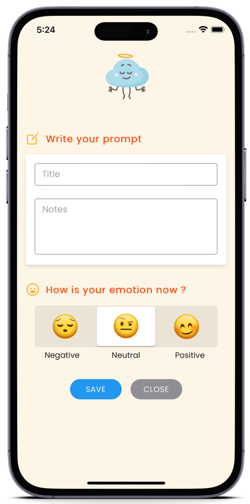
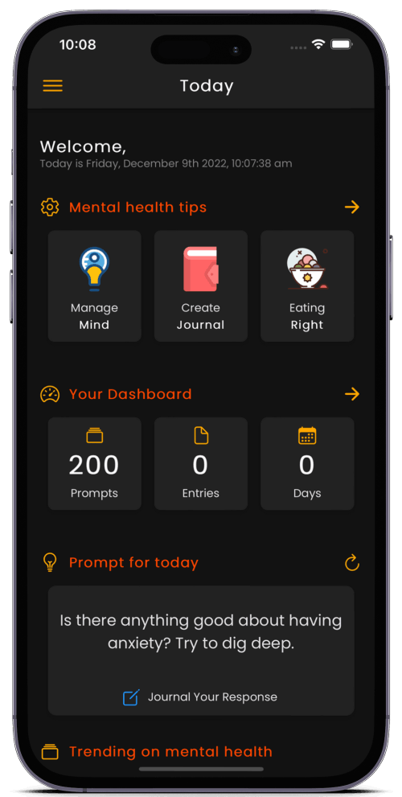
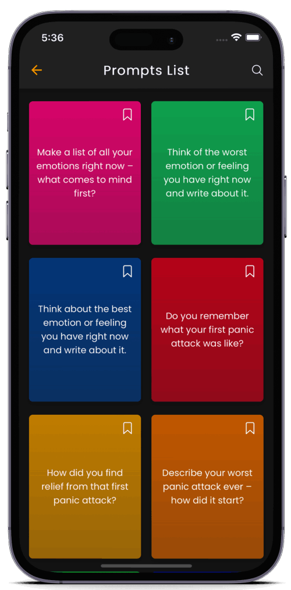
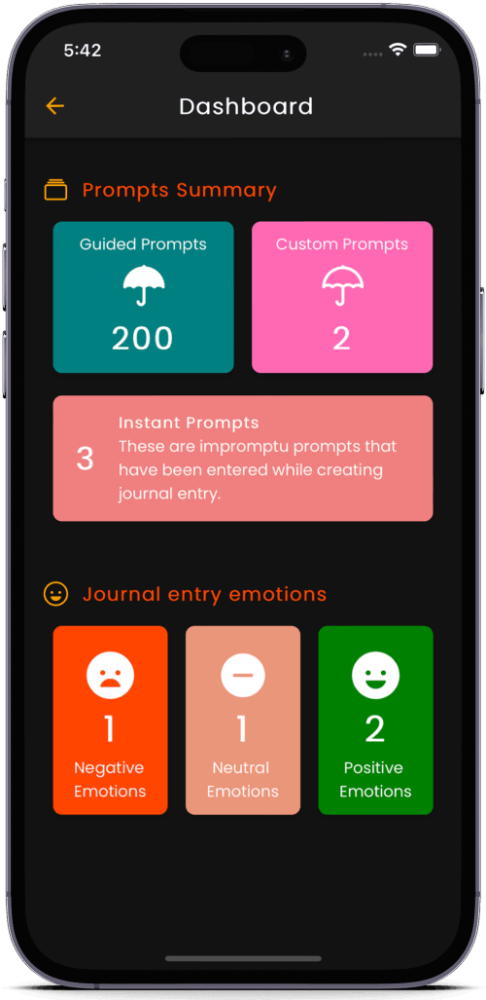
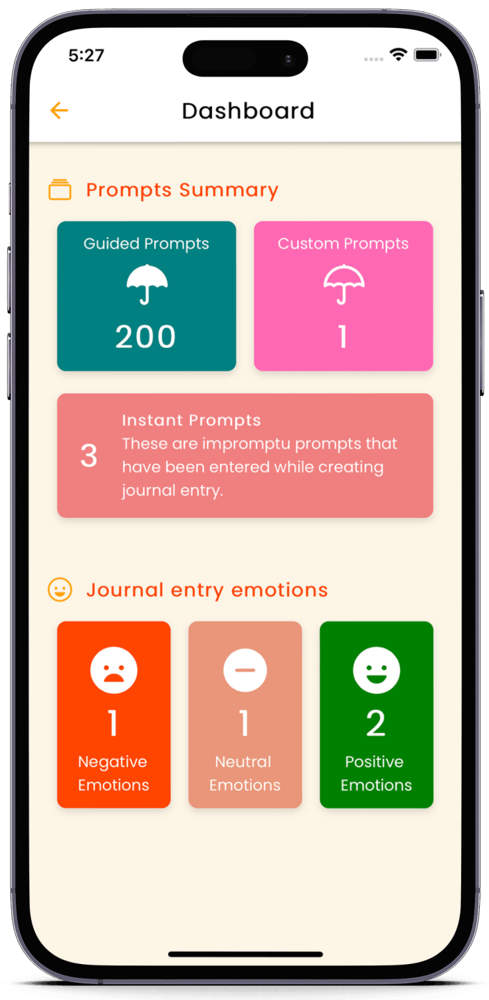

Journal your way
to better mental health
Healment app helps you Journal your thoughts and free your mind. This app is your companion for better mental health.

Journal your thoughts in healment app
Journaling about your feelings can be a helpful way to process and understand your emotions. It can also provide a space for self-reflection and personal growth. When you write about your feelings, you are able to express yourself in a way that may not be possible through spoken language. This can be especially beneficial if you are experiencing difficult emotions, such as sadness, anger, or anxiety.
-
A Safe Space for Raw Emotions: Express complex thoughts without fear of judgment.
-
Emotional Processing: Clarify emotional knots and relieve feelings of stress and anxiety.
-
Clutter-Free Mind: Unburden your cognitive load so you can focus on what matters.

Use guided prompts
Using guided prompts for journaling about your mental health can be a helpful way to structure your entries and focus your thoughts. These prompts can provide specific topics to write about, which can help you explore different aspects of your mental health and gain insights into your emotions and experiences. Healment app provides over 200 guided prompts and you can also create your own prompts.
“What is one worry currently on your mind, and what evidence is there that everything will be okay?”

Introspect in to your thoughts & patterns
Writing in a journal can also help you gain insights into yourself and your experiences. By reviewing your entries, you may notice patterns in your thoughts and behaviors, which can provide valuable insights into your emotions and motivations. This can help you better understand yourself and make positive changes in your life.
-
Identify Emotional Triggers: Understand what circumstances lift your mood or trigger anxiety.
-
Visualize Your Mind: Clear graphs depicting mood distribution, journaling frequency, and growth milestones.
-
Empower Positive Habit Loops: Build actionable self-awareness to make enduring lifestyle improvements.

Features
Designed with thoughtful minimalism and evidence-based mental wellness practices to help you feel stronger, calmer, and more hopeful every day.
Mental health tips
Provides general mental health tips and industry trends. These proven tools can help you feel stronger and more hopeful. Check out each tips section for specific, easy-to-follow tips.
Prompts
Using guided prompts for mental health journaling can help you focus your writing and explore different aspects of your mental health. It can also provide a helpful structure for your entries, making it easier to write regularly and consistently.
Easy journaling
Simple interface for journaling for your mental well-being. Overall, journaling about your feelings can be a beneficial tool for managing your emotions, gaining self-awareness, and promoting personal growth.
Insightful dashboard
Dashboard allows to track and analyze mental health data. It includes data such as journaling trends, mood tracking, and data visualization, which can help users gain insights into their mental health and well-being.
App themes
Supports dark and light themes that users can configure. Seamlessly matches your personal aesthetic and helps reduce eye fatigue when journaling at night.
Bookmarks
Bookmark your favourite prompts, mental health articles and journal entries. Keep what inspires and heals you easily accessible whenever you need a boost.
A Mindful Experience on Every Screen
Clean typography, comforting aesthetics, and seamless navigation designed to calm your senses from the moment you open the app.
Your Daily Mental Wellness Hub
Get greeted every day with inspiring prompts, gentle reminders to check in with your emotions, and instant access to your daily journal.
Journal your feelings safely
A soothing, distraction-free environment that lets your thoughts flow effortlessly. Express your emotions without worrying about structure or grammar.
Explore deep self-reflection
Never stare at a blank page again. Choose from curated prompts tailored to anxiety relief, gratitude, daily mindfulness, or craft your very own.
Understand your patterns
Review recurring moods and habits over time. Gain meaningful clarity into what nourishes your spirit and what triggers anxiety.

Custom themes & bookmarks
Configure comfortable dark and light themes, bookmark favorite passages and tips, and safeguard your journey with on-device privacy.